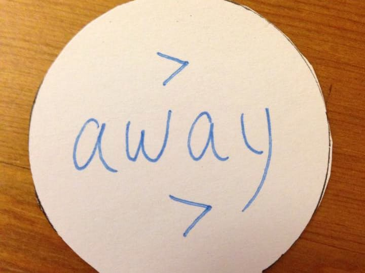
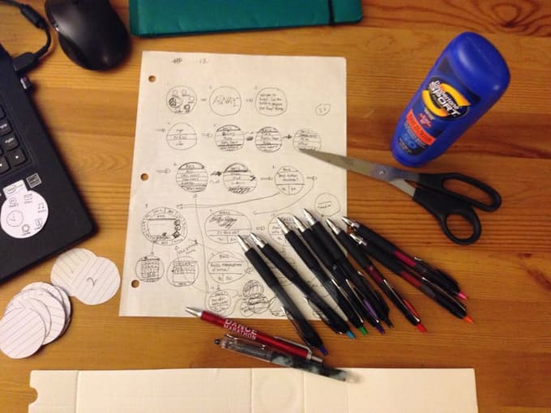
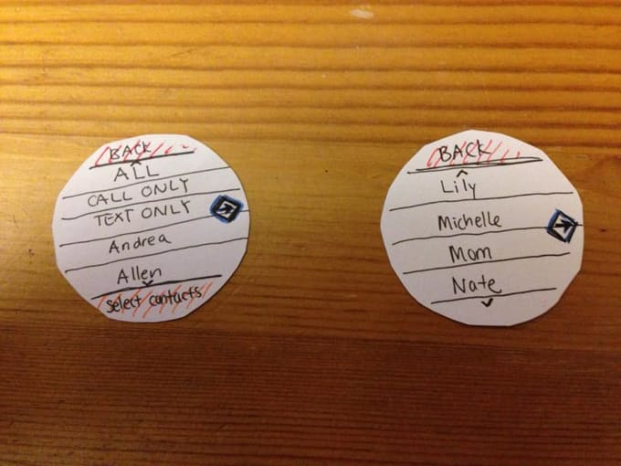
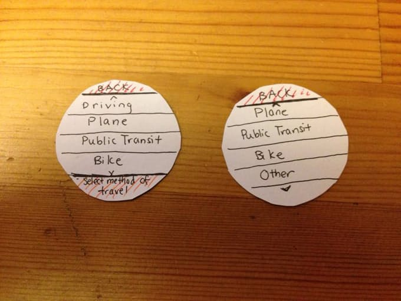
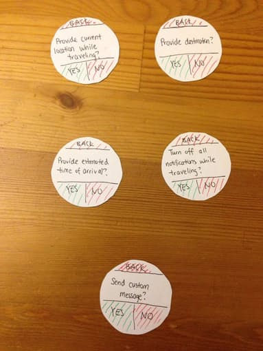
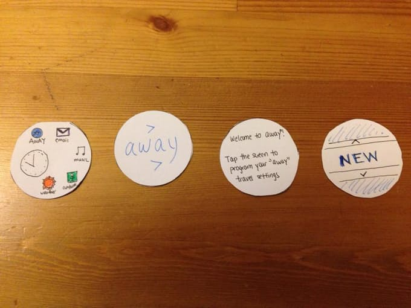
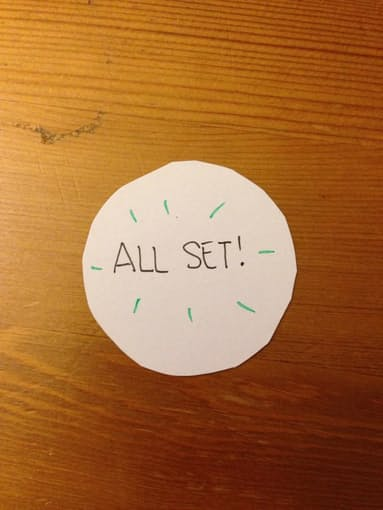

Project
away
Prototyping

TIMEFRAME
June 2015
ROLES
UI/UX Designer
"away" is a smartwatch app for on-the-go travelers that sends automated messages (preset by the user) to callers or texters when the user is unable to immediately respond to a text or call.
Purpose
This prototyping project was an assignment given in CS 160 to challenge students to think of apps well-suited for mobile computing, particularly smartwatches, and utilize physical prototyping methods. CS 160 is a User Interface Design class offered by the Computer Science department at UC Berkeley that I took in summer 2015.

Features
The smartwatch app allows users to create and save messages or other information to send to specific contacts, calling contacts, or all contacts when said user is traveling. These pre-programmed settings can also be further customized and saved under various names to be accessed quickly later in similar situations. Navigation in the app is simplified to single taps through different options.

User Research
The idea came after two interviews with two different users about their smartphone usage and what they thought of smartphones as an alternative. Both users used their phone almost exclusively for messaging others, whether through text or call. Both users also shared a similar need to travel a lot, especially in commuting to work, or even traveling back to their home country. The need to text and call, as well as the fact that both women work and travel from location to location frequently, were elements I kept in mind as I began thinking of ideas for possible smartwatch apps.
User Testing
After prototyping my screens from paper and pen, and using a strip of cardboard around the wrist to simulate a watch, I tested the app's functionality with a user. After running through a basic introduction to the app, I allowed him to use the app for himself, and manually switched screens based on his actions, and took notes, and observed.

The user concluded that he found the smartwatch app useful and would definitely want to use it in the future, but that he would probably restrict usage to biking or driving (when it would be inconvenient to use a smartphone). The user also suggested having voice support, so that someone on-the-go could just speak to the smartwatch instead of tapping furiously. He did run into problems with the app while using it, including unclear logic (e.g., swiping the screen vs. tapping) and a lack of indicators when he took a specific action.





Key Takeaways
- Even the tiniest details (like the pattern of responses whether taps or swipes, the ordering of questions, the inclusion of transition screens) can make a user's experience of an app significantly better or worse.
- Prototyping with pen-and-paper is a different (and quite cathartic) exercise of creativity.